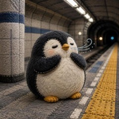
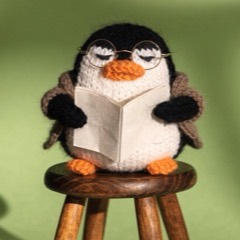
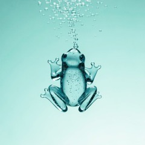
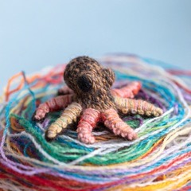
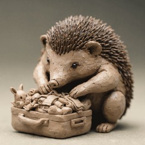
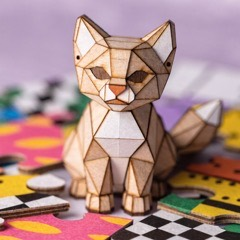
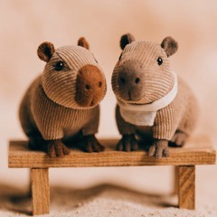
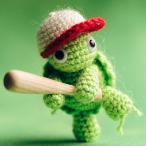
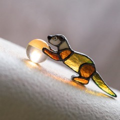
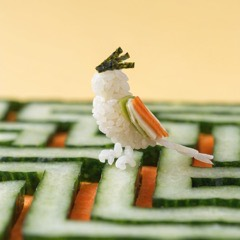

⚡ 15 SECOND BLOG ⚡
Things I noticed 🐧
Short posts in easy English, written by a penguin. 🐧
Most posts take about 15 seconds to read — the word count is written at the top of each page, so you know before you start. ⚡
🐧 Who is Pengesso? → 🧭 Things I Want to Remember →
⚡ 15 Second
35–55 words. Blink and it's over.Things to Remember
I turn off everything that is not now

Subway Smell
I like the smell while waiting on Japanese subway platforms

Cute Outside
I like the gap between Tsubakuro's cute look and old-man personality
One Object
I regret buying a running machine because it just sits there

The Feeling
My need to write things down works like a toilet
Your Job
To use AI well, you have to give the answer first 🤖
📖 The 1-Minute Archive
2026.08 · back when these were a whole minute long.
Stop Thinking
Stop Overthinking Practice 🌀
Leave Behind
Perfectionism #3: Choose 3 Things to Leave Behind First

Never Ready
Perfectionism #2: Preparation Never Becomes Perfect

Love Starting
Perfectionism #1: Why Perfectionists Love Starting

Working Culture
The Cultural Gap I Felt Working in Japan and the Philippines
Store Staffing
The Difference in Store Staffing Between Japan and the Philippines

Old Game
I Played Pawapuro Again After a Long Time! 🎮

Output Only
Knowledge Metabo #3: Only Output Makes Life Roll

Wrong Search
Knowledge Metabo #2: I Looked for the Correct Answer
Knew More
Knowledge Metabo #1: I Knew More. I Moved Less.